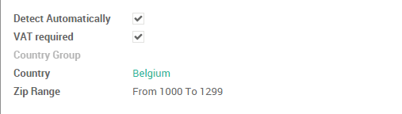

In YuanCloud, the default tax to apply on a product/service is set on the product form. But, some customers may have specific tax rates because of their status (in some countries, construction companies are VAT exempts) or their location (customers in a different country, state and/or city may be subjected to another tax rate).
In order to select the right tax to apply according to the customer or product, YuanCloud uses the concept of fiscal positions. If a customer has a specific fiscal position, the default tax may be replaced by another one. (as an example, construction companies have 0% instead of 21% in Belgium for construction related work).
As an example, in Belgium, for the VAT tax, there are 3 fiscal positions that depend on on the country of the customer and some companies (like construction companies) benefit from a specific fiscal treatments:
- Belgian companies: with 21% VAT (default, on product form)
- European companies: with 0% VAT (intra-EU)
- Other countries: 0% (but a different tax since it uses different accounts)
- Construction companies: with 0% VAT, only for construction companies in Belgium
配置
Set the right taxes on your products
The main taxes are automatically configured according to the chart of accounts of your country.
But if you want to set a specific tax on a specific product, you can set the sales and purchases taxes on the product form, under the Accounting tab. These taxes are the default one (used when you sell to companies that are in the same country/state than you)
小技巧
If you work in a multi-company environment, the sales and purchase taxes may have a different value according to the company you work for. You can login into two different companies and change this field for each company.
定义财政位置
The main fiscal positions are automatically created according to the chart of accounts of your country. But you may have to create fiscal positions manually for specific use cases.
To define fiscal positions, from the Accounting application, go to .
Fiscal position is just a set of rules that maps default taxes (as defined on product form) into other taxes. In the screenshot below, european customers have a VAT of 0% instead of the default 15%, for both sales and purchases.
注解
You can also map the income / expense account according to the fiscal position. For example, in Belgium, revenues from sales are not posted in the same account than revenues from sales in foreign countries.
自动应用财政位置
If you check the box Detect Automatically, the fiscal position will be applied automatically if the Country, State, City or even the Country Group matches. You can also apply the fiscal position only to companies having a valid VAT number.
You can also set a target Country/State/City. The fiscal position will be applied if the destination address of the customer matches these criteria.
特殊使用案例
If, for some fiscal positions, you want to remove a tax, instead of replacing by another, just keep the Tax to Apply field empty.
If, for some fiscal positions, you want to replace a tax by two other taxes, just create two lines having the same Tax on Product. You can also create one that is a grouping of two other taxes, depending on how you want to make them appear on the invoice.
使用财政位置
If you keep the field Fiscal Position empty on customers , the fiscal position is applied automatically on sales order, purchase orders, web orders and invoices.
But, if you set the fiscal position, YuanCloud will use this specific fiscal position for this customer on orders (example: construction companies). In such a case, it's recommended to set the fiscal position on the customer form. YuanCloud will automatically reuse this value for orders and invoices, without trying to auto-detect the fiscal position.
If you set the fiscal position at the sale order or invoice level, it will only apply to this document only and not to future orders/invoices of the same customer.
For eCommerce orders, the tax of the visitor's cart will automatically update and apply the new tax after the visitor has logged in or filled in his shipping address.
参见